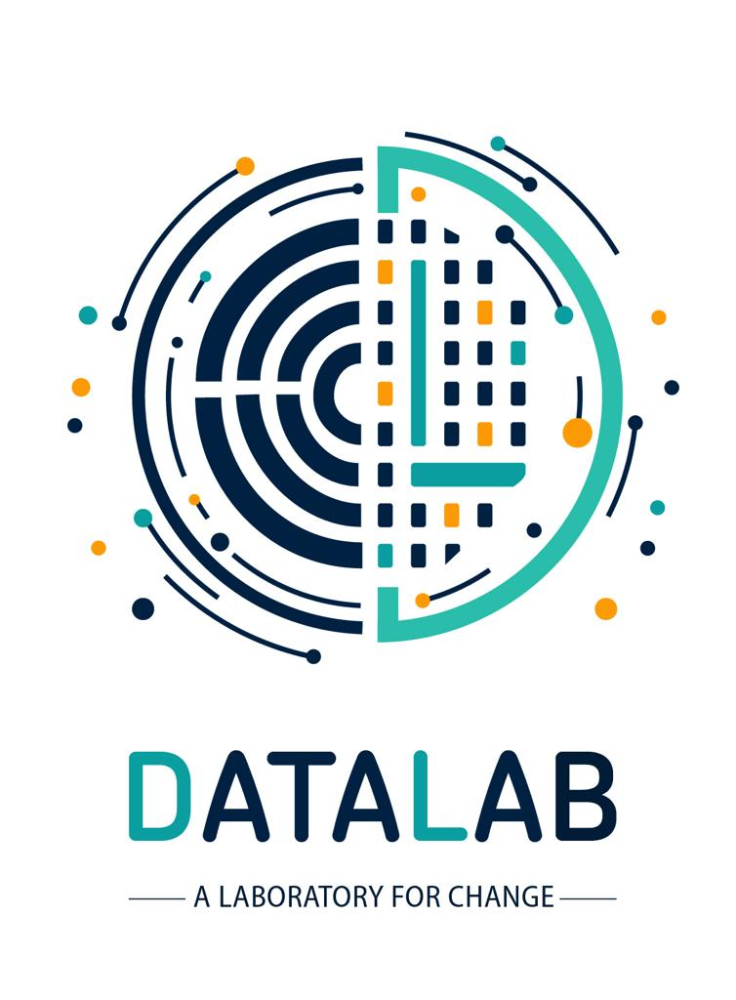

What is DataLab?
The DataLab is a group of young voluntary data experts working together to empower positive change in society through data insights.
Our vision is to harness the power of data to support informed decisions and inspire action and innovation for the common good. We are dedicated to apply our data expertise to drive lasting positive change and improve our environment and societal well-being for the benefit of all.
Our values: collaboration, transparency, accessibility, open-mindedness, impact-driven.
We are working together in our free time and are supported by the King Baudouin Foundation.
Meet our active team members:
In 2024, the DataLab was created and we decided to kick things off with a sustainability project. Amongst a series of exciting topics, the group voted to work on the 3-30-300 rule because we wanted to bring more knowledge to people about the places they live in. You can explore the map here, as well as the methodology we followed here.
In 2026, we launched our second project on the topic of healthcare accessibility. We're still in the early stages of this project, defining the exact scope and research question, but we're excited to share more about it in the future!
In the meantime, we welcome new members and volunteers. Want to join the DataLab? Volunteer for a meaningful project? Share an idea for a data-for-good initiative or brainstorm together? Contact us at… info@thedatalab.be.
Stay tuned for other projects of the DataLab in the future!
Follow us on social media:


Qu'est-ce que le DataLab ?
Le DataLab est un groupe de jeunes data experts bénévoles qui travaillent ensemble pour favoriser un changement positif dans la société grâce à la connaissance des données.
Notre vision est d'exploiter le pouvoir des données pour soutenir des décisions éclairées et inspirer l'action et l'innovation pour le bien commun. Nous sommes déterminés à appliquer notre expertise en matière de données pour susciter des changements positifs durables et améliorer notre environnement et le bien-être de la société pour le bénéfice de tous.
Nos valeurs : collaboration, transparence, accessibilité, ouverture d'esprit, impact-driven.
Nous travaillons ensemble pendant notre temps libre et nous sommes soutenus par la Fondation Roi Baudouin.
Rencontrez les membres actifs de notre équipe :
En 2024, le DataLab a été créé et nous avons décidé de commencer par un projet pour l’environnement. Parmi une série de sujets passionnants, le groupe a voté pour travailler sur la règle des 3-30-300 parce que nous voulions apporter plus de connaissances aux gens sur les endroits où ils vivent. Vous pouvez trouver la carte ici, ainsi que la méthodologie que nous avons suivie ici.
En 2026, nous avons lancé notre deuxième projet sur le thème de l'accessibilité des soins de santé. Nous en sommes encore aux premières étapes de ce projet, en train de définir précisément son périmètre et sa question de recherche, mais nous sommes impatients d'en partager davantage à l'avenir !
Entre-temps, nous accueillons de nouveaux membres et bénévoles. Vous souhaitez rejoindre le DataLab ? Faire du bénévolat pour un projet porteur de sens ? Partager une idée d'initiative data for good ou réfléchir ensemble ? Contactez-nous à l'addresse info@thedatalab.be.
Suivez-nous pour rester informé des autres projets du
DataLab à l'avenir :
Wat is DataLab?
DataLab is een groep van jonge vrijwillige data-experts die samenwerken om positieve verandering in de samenleving te stimuleren door middel van data-inzichten.
Onze visie is om de kracht van data in te zetten om weloverwogen beslissingen te ondersteunennemen en actie en innovatie te inspireren voor het algemeen belang. We zetten ons in om onze data-expertise toe te passen om blijvende positieve veranderingen teweeg te brengen en ons milieu en het welzijn van de samenleving te verbeteren ten gunste van iedereen.
Onze waarden: samenwerking, transparantie, toegankelijkheid, openheid, impactgericht.
We werken samen in onze vrije tijd en worden ondersteund door de Koning Boudewijnstichting.
Maak kennis met onze actieve teamleden:
In 2024 werd DataLab opgericht en besloten we te beginnen met een project voor milieuduurzaamheid. Uit een reeks interessante onderwerpen stemde de groep om te werken aan de 3-30-300 regel omdat we mensen meer kennis wilden geven over de plekken die hen dierbaar zijn. Bekijk de kaart hier en lees hier meer over de methodologie die wij hebben toegepast.
In 2026 hebben we ons tweede project gelanceerd rond het thema toegankelijkheid van gezondheidszorg. We bevinden ons nog in een vroege fase van dit project, waarin we de exacte scope en onderzoeksvraag bepalen, maar we kijken ernaar uit om hier in de toekomst meer over te delen!
Intussen verwelkomen we nieuwe leden en vrijwilligers. Wil je je aansluiten bij DataLab? Wil je vrijwilliger worden voor een nuttig project? Heb je een suggestie voor een "data for good" project of wil je samen brainstormen? Neem contact met ons op via info@thedatalab.be.
Volg ons om op de hoogte te blijven van andere DataLab
projecten in de toekomst:
Former members of DataLab:
Anciens membres du DataLab :
Voormalige leden van DataLab: